Material Author · sample slab
One authored marble slab, shown four ways — pristine, subtly wrong, screaming, and turned inside out.
The fiction it was authored to: stone cut from a volume of space the warp got into. The scorch at the central junction is where something older held that zone — a wound that is also a protection. Ordinary eyes see the burned slab in daylight. A psyker sees what is under it. Same stone, same geometry, two sights.
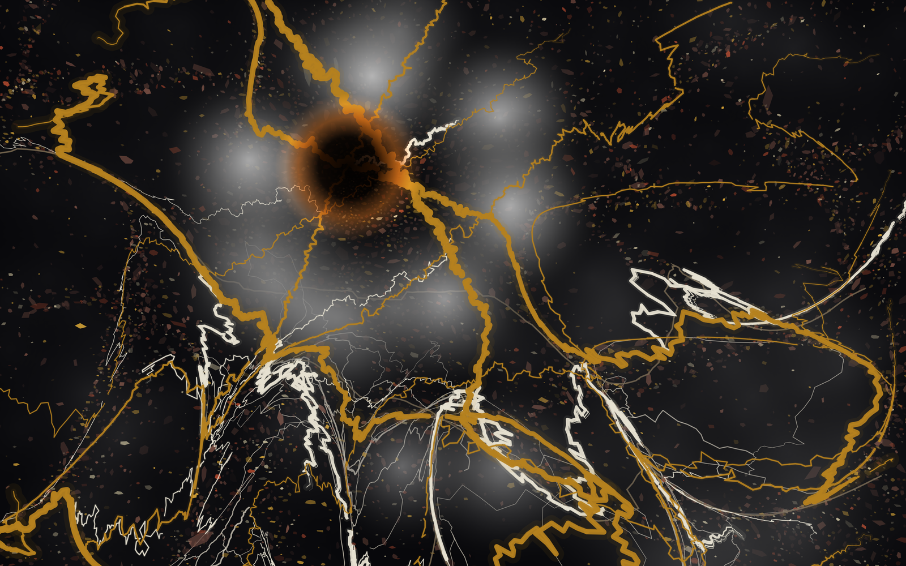
Gold and white running over near-black granite. The scorch sits where the veins meet, and reads as damage.
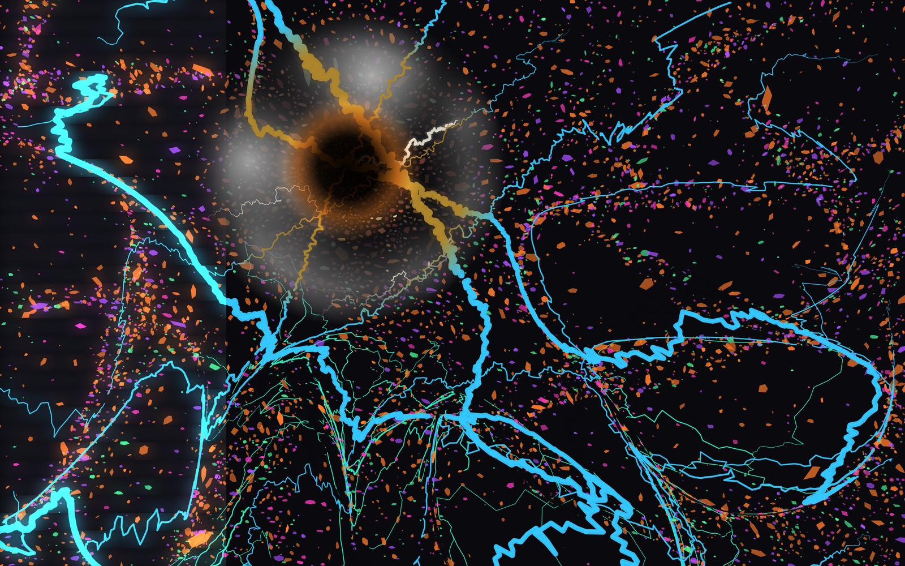
The same geometry, screaming. And around the scorch, a held circle of ordinary daylight stone: the mark is not the damage, it is the thing keeping the damage out.
composited Both of those come off the same 65,535 × 40,959 master — 2.68 gigapixels, rendered as a grid of tiles straight to a tiled BigTIFF and downsampled here to 1600 px. The burn is painted on after the render: it is the one thing on this page the slab does not contain. Everything else — every vein, speck, fog bank and the entire spectrum change — is the renderer. The unburned masters are at the bottom of this page.
Material Author draws stone as vector geometry, not pixels: veins, specks, fog and warp are a
few thousand simple shapes driven by a small recipe. The recipe — a .json slab — is the master,
and the render is a deterministic function of it: within one browser build the same slab renders
byte-identical every time — the gallery harness gates exactly that, twice from a fresh load — and the same
geometry can be drawn at any size. Across browser builds the picture is the same and the bytes are not, because
sub-pixel anti-aliasing moves; that comparison is recorded rather than gated. The four steps below came off two
slabs, rendered at 1600 × 1000; the post-steps that three of them add are recorded in
reference.json, parameter by parameter.
The married gold-and-white fracture network on near-black granite, exactly as authored. The base state the other three happen to, and the only picture here that is nothing but a slab and a renderer.
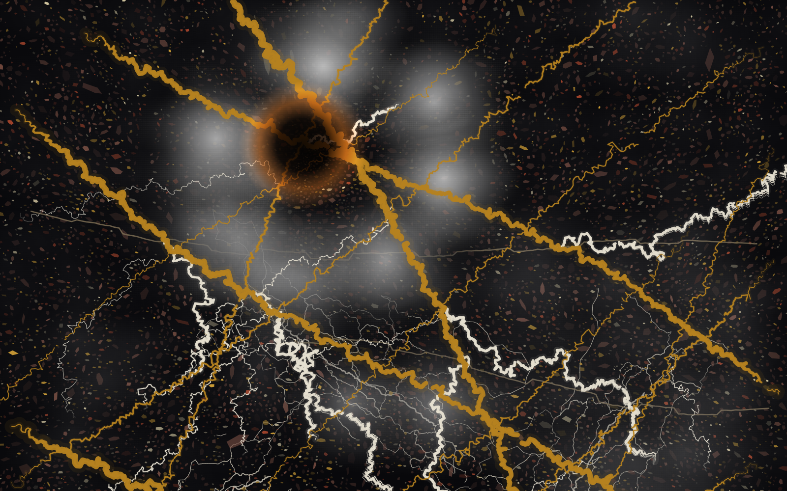
The same stone warped about 1.5% and scorched at the junction. Nothing you can point to, but the eye knows the veins don't quite land where they should.
Daylight and psyker are the same slab. One authored geometry, two lights: at rest it's near-true; under the other spectrum the full distortion it was always carrying is exposed.
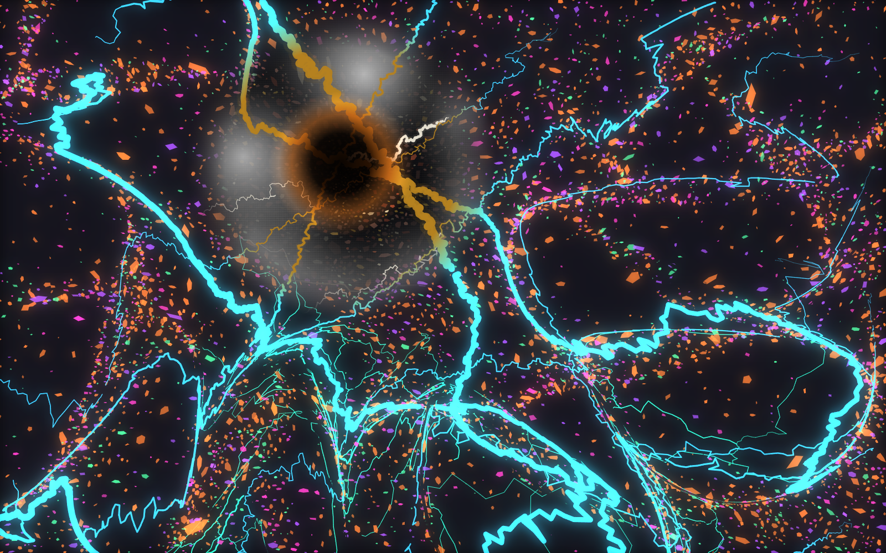
The same slab at full warp, recoloured into emission: gold veins fire electric cyan, the granite scatters in neon. The burn holds as an island of normalcy — a window where the warp never reached, so real daylight stone shows through the screaming.
Then turn the mask inside out. The same disc, in the same place, asked the opposite question: not what did the warp fail to reach but what is the only thing it reached.
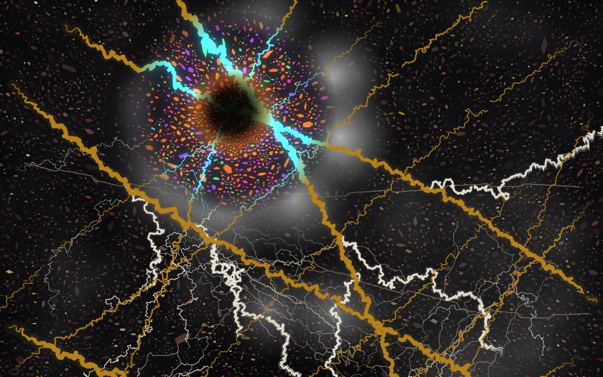
The same slab, the same burn, the same disc — but the mask now inverts. The warp is permitted only inside that circle, so the stone around it holds perfectly still: gold and white veins running straight across the granite, in daylight. And the disc looks out on the psyker spectrum. Not an island of calm in a screaming field — a hole in an otherwise ordinary slab, with the screaming on the other side.
pure render Two slabs under two lights, with nothing
added — no burn, no compositing, no retouch. All four were cut on one machine on one afternoon, on the same
build, and downsampled to 1600 px from masters of up to 2.68 gigapixels. Each carries its own record of the
render that made it — build, engine, hardware class, tile plan, per-tile timings, and a device identity sealed
under the slab's own bytes — readable with node tools/tiff-meta.mjs <file>, which is how
every figure published about this renderer is checked.
The same geometry as hero 01, rendered as a master rather than at 1600 px. Under the other spectrum it has nothing to declare: no emission colours are defined for it, so what is left is the stone's own relief under a light that none of it answers.
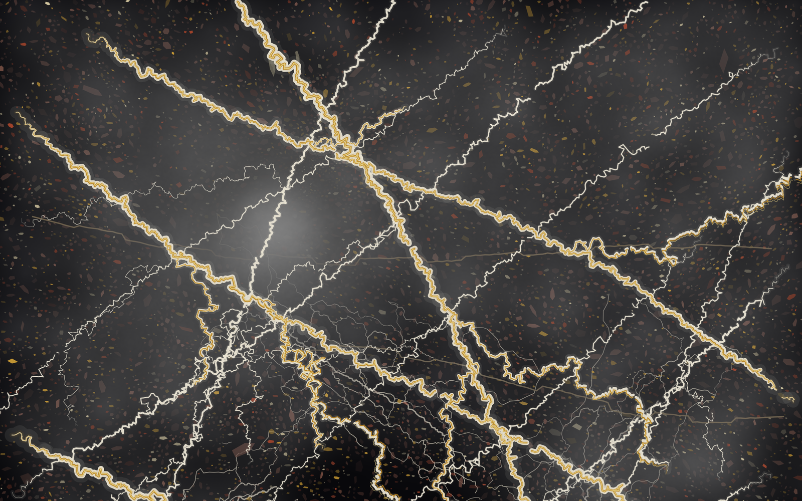
65,535 × 40,959 in 160 passes of 4096 — the small passes are what a real blur costs, at
sigma 141px.
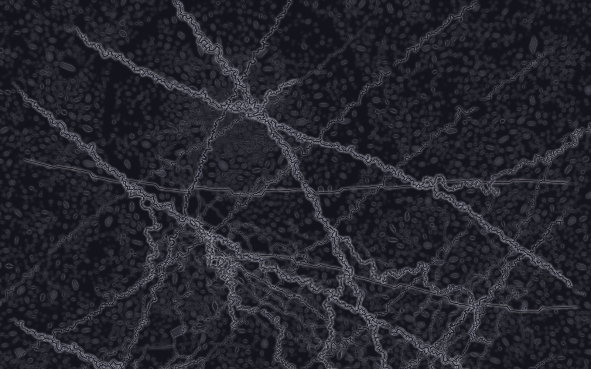
Structure without colour: every speck and vein in pale relief, and not one emitter. A psyker looking at ordinary stone sees ordinary stone.
The same two lights on the slab the heroes come from. Here the other spectrum has everything to say, and the protected window at the junction is rendered, not composited — ordinary daylight stone standing in the middle of the screaming, because the mask is a real mark in the slab. Put the burn on top of this one and you have the picture at the head of the page.
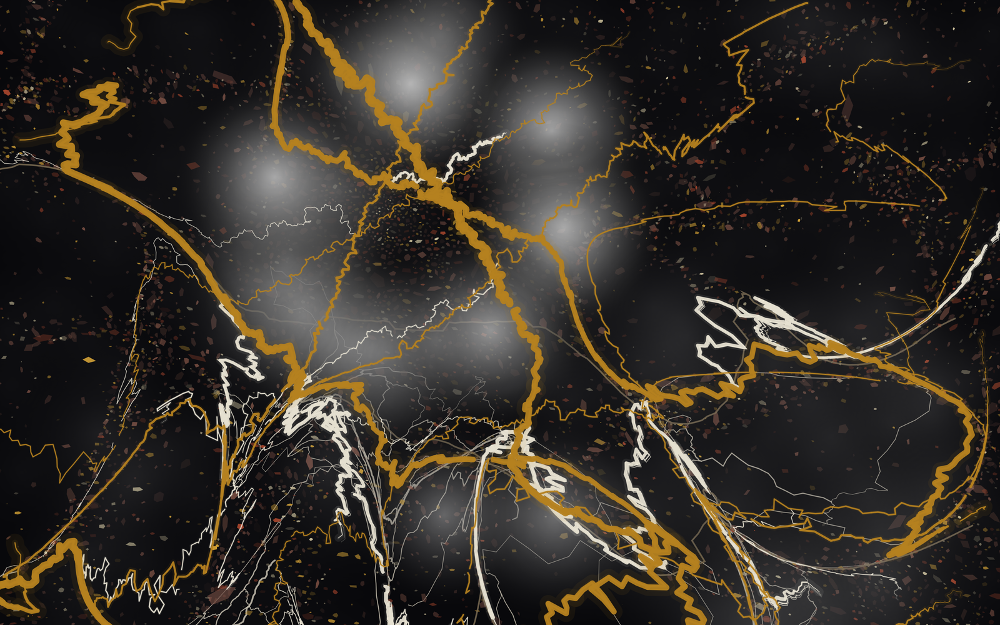
32,768 × 20,480 — a quarter of the pixels of the others, and the only one here not cut at 65,535.
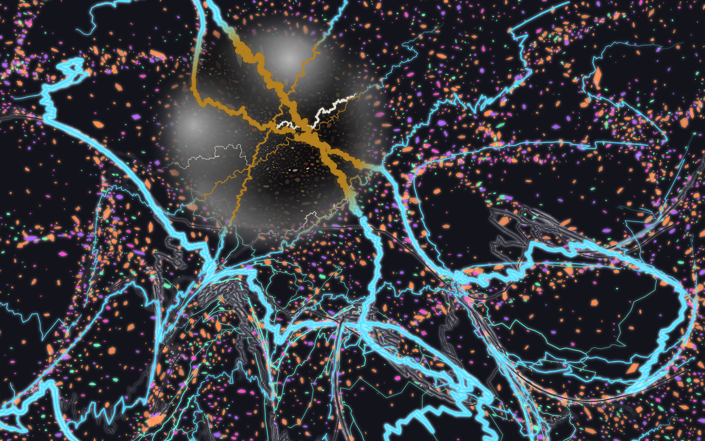
65,535 × 40,959 in 40 passes of 8192, blur-free — which is why it renders in half the time of the pristine slab at the same size.
pure render Material Author forks at one seam: a material is a field, a two-dimensional query against that field, and its own control surface. The six plates below come off one slab file carrying one set of geometry — 666 marks, 70 lines, 232 cracks and 8,050 specks, identical in all six of their metadata blocks — cut at 16,384 × 10,240 and downsampled to 1600 px. What that geometry becomes is the material's to decide — and on this slab two of the three show none of it.
Stone is the material that paints the marks: every vein, crack and speck in the slab is a shape it strokes. Under the psyker spectrum the same geometry answers in emission — all but one vein, which still reads gold.
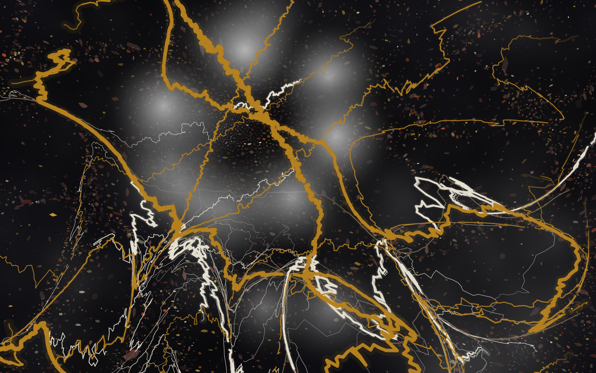
Gold and white over near-black granite, the speck field in oxide reds and greys, fog banks behind.
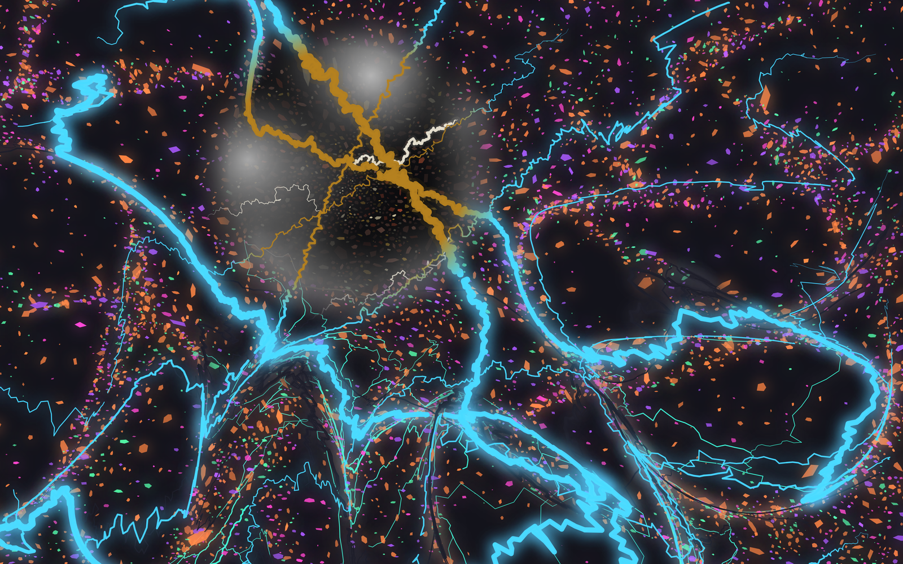
The same shapes, in emission. The specks that were oxide red are neon, the veins run electric cyan — and one still reads gold.
Glass holds a label where stone holds a colour, so a fold finer than the pixel grid cannot be filtered where it is sampled — it resolves as speckle rather than as a soft edge. Cutting at 16,384 and box-filtering down to 1600 averages 105 samples into every published pixel, which is the same remedy as supersampling and costs one plain render instead of sixteen. It is also the smallest file on this page by a wide margin — 4 MB against stone's 45 at the same size, because smooth bands compress and a speck field does not.
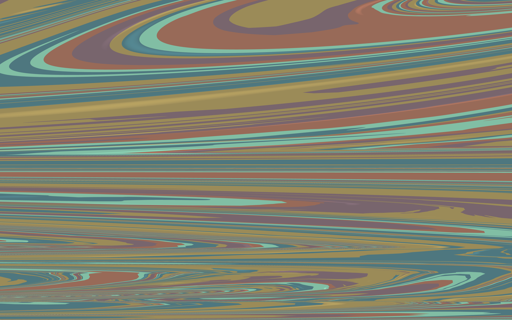
The same slab the stone above came from, queried as glass. None of the 666 marks appear: the face is the field's own level set, and the geometry is simply not what this material asks.
Wood's model is a three-dimensional growth-ring field about a
wandering pith. Nothing stores a board — a board is a plane handed to that field, and the cut is
decided by where the plane stands: cos θ = plane / r, where r is the radius from the
pith at that point. The three below are one log, and they cannot be anything else: the log's seed and
scale are deliberately not exposed as controls, so moving the saw plane is the only thing an author can do
here. Each is 16,384 × 10,240 in 40 passes of 2048.
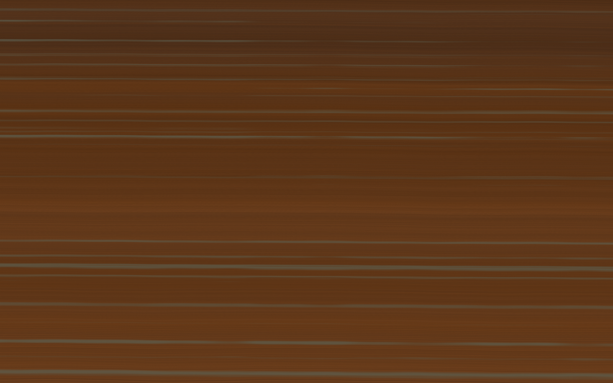
The rings meet the face near-perpendicular, so they cross it as parallel lines. Straight edge to edge.
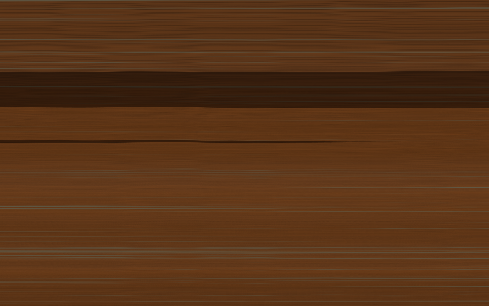
The same plane, further round. Straight at a glance, but it sweeps — and the character drifts across
the board's own width, because r does.
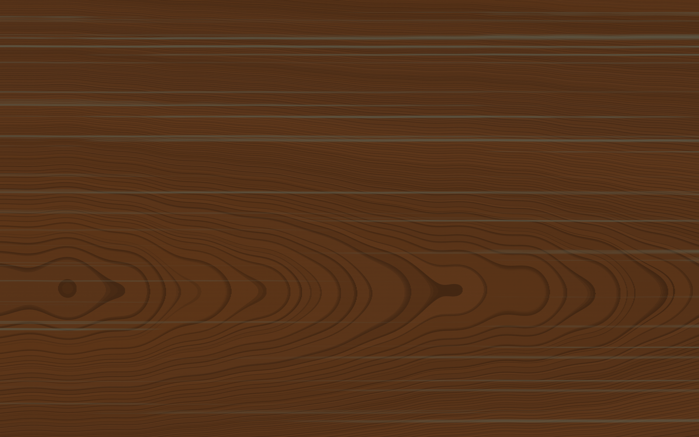
The plane stands tangent to the rings, so they open into arches. The pointed centres are where it runs closest to the pith.
pure render A master renders as a grid of tiles, and
a tile cannot blur what it cannot see. So every blur in the coat makes each tile paint a margin of its
neighbours and then throw that margin away. The margin is set by the blur radius, and the coat's radius is a
fixed fraction of the picture — at subsurface 2 it is 0.8% of the width — so the bleed
grows with every render size while the tile does not.
The pair below is the same picture under the two coat paths, at
65,535 × 40,959 — 2.68 gigapixels, 640 passes of 2048. Only the coat path differs: both carry the same
recorded state, and the signature moves only because the renderer is part of it.
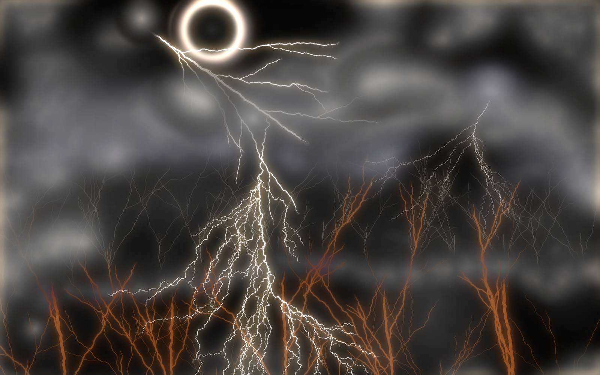
Paints 17.32 Gpx to deliver 2.68: 6.45× over, 85% of every painted pixel discarded. The fog banks stay grey and behind, and the picture keeps its depth.
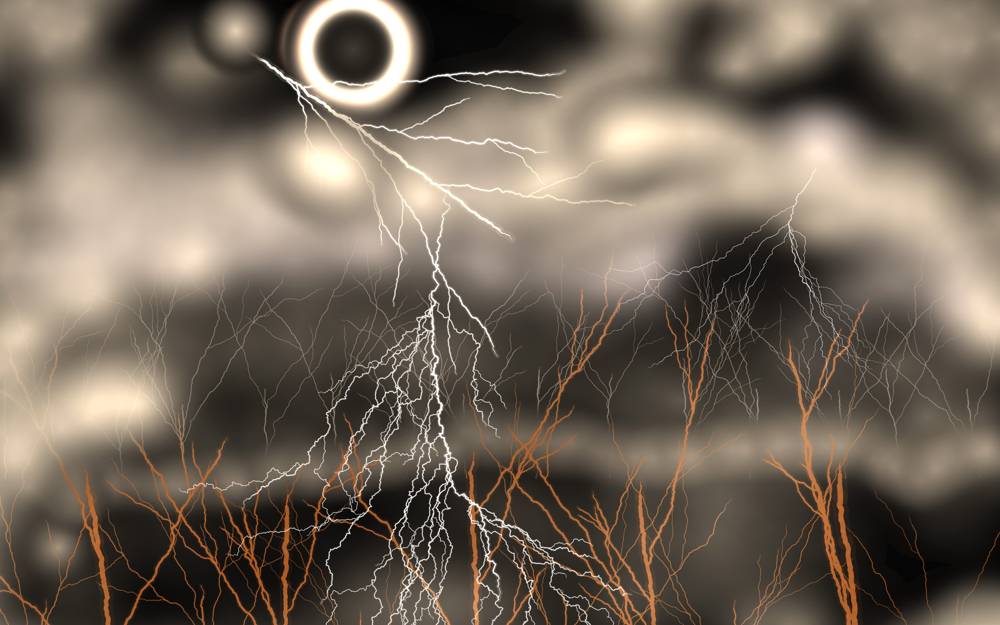
Paints 2.73 Gpx to deliver 2.68: 2% discarded. It lights features by re-drawing each layer's own geometry, so it reads no neighbours at all.
32.3× — and it decomposes. 6.3× of it is the extra
pixels painted; the remaining 5.1× is that each painted pixel is slower, because the blur runs through
ctx.filter and saturates the GPU. It is not a cheaper version of the same thing. The
subsurface weights by local contrast; the boost weights by coverage, so it reaches neither soft edges nor the
painter's own dither. That is why the fog comes forward and the light mean goes 69.60 → 102.08. Different
tool, not a discount — the slower one is kept because it is the one that can do this.
Four coat settings, each rendered both ways. The first pair is the pair above, cut at a quarter of the width: same recorded signature, and the light means agree to 0.1 across a 4× change of size — 69.70 against 69.60, 102.18 against 102.08. The coat is scaled by the picture rather than by the window, so a smaller render is the same picture, not a crop. At this size the blur costs only 10–15% of the render time, because a 398 px bleed is cheap; the cost lives at size, which is what the 65,535 pair is for.
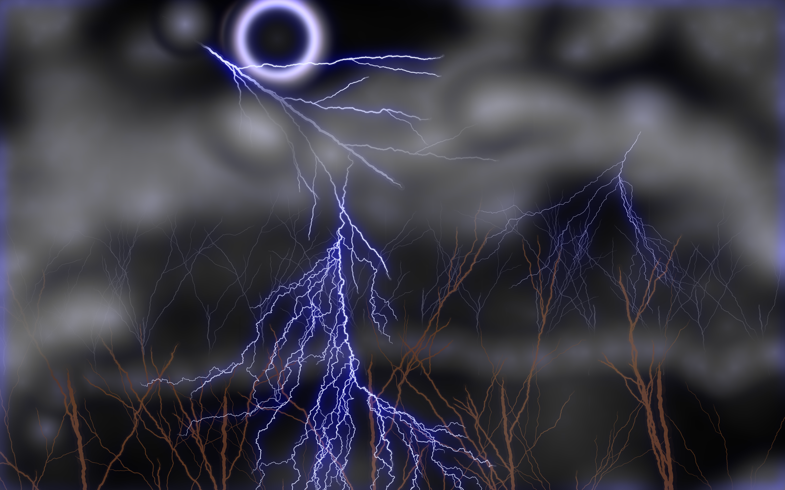
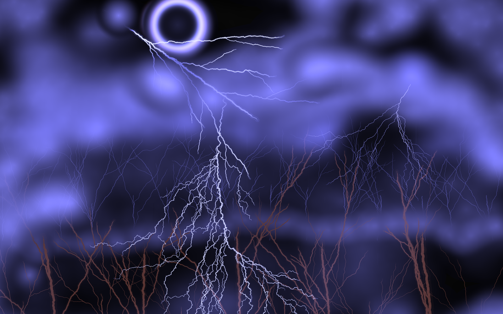
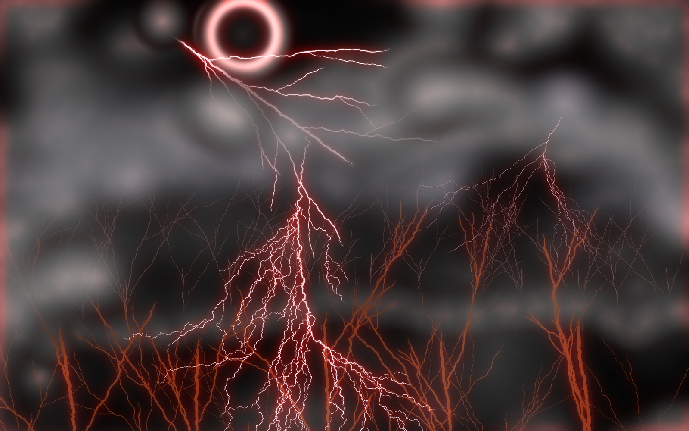
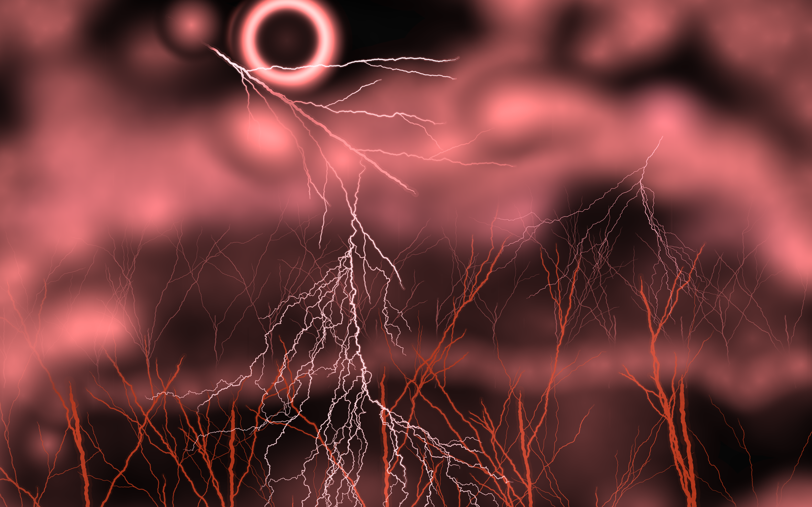
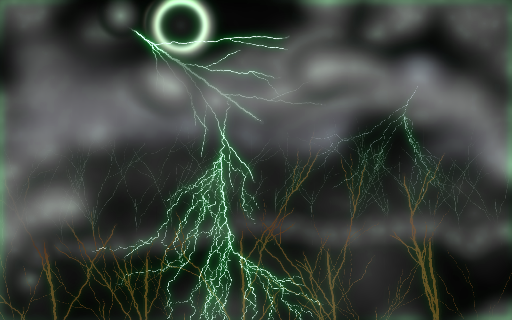
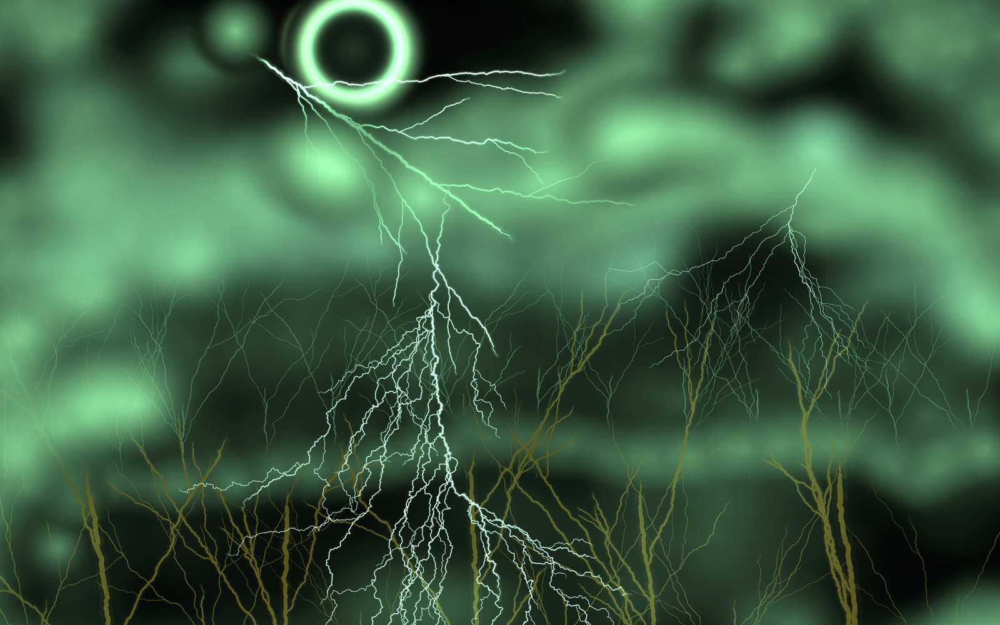